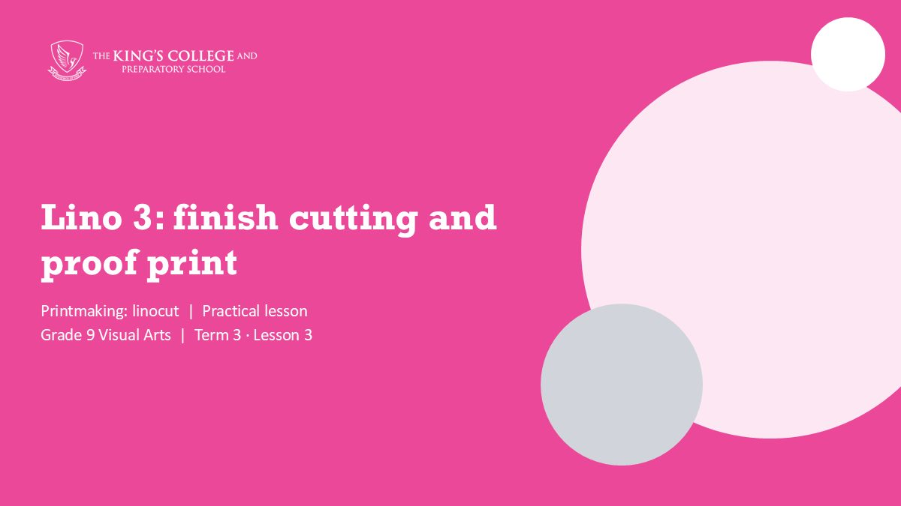

Term 3 · Lesson 3 · Practical lesson
Lino 3: Finish Cutting and Proof Print
Start Here
Today I Will
- Finish cutting the details and textures
- Pull a proof print to check my block
- Mark and make corrections
Think first
Why do you think printmakers always test-print before the real edition?
Words to Know
| Word | Meaning |
|---|---|
| Proof | A trial print pulled to check how the block prints before the final edition. |
| Brayer | A small rubber roller used to spread ink thinly and evenly. |
| Registration | Lining up the paper and block in exactly the same position every time. |
| Inking slab | A smooth, flat surface where ink is rolled out. |
| Baren | A flat, round hand tool rubbed over the back of the paper to transfer the ink. |
Slides

Videos
Notes
Proof print, check and recut.
Texture in Relief
- Lines: Parallel V-gouge cuts for hair, grass or water.
- Dots: Small stabs with the tip of the V-gouge.
- Cross-hatching: Two sets of cuts across each other give a grey effect.
- Broken marks: Short cuts for bark, stone or fur.
Pulling a Proof
- Roll out the ink: A thin, even layer on the slab: it should look like velvet and make a soft hiss.
- Ink the block: Roll in several directions until the surface is evenly covered.
- Place the paper: Lay it down gently in the registration marks; do not move it once it touches.
- Burnish and lift: Rub firmly with a spoon or baren, then peel back from one corner.
- Read the proof: Circle the areas to recut.
Remember
The proof tells the truth about your block.
Practical
You need: Block, gouges, bench hook, black water-based ink, brayer, inking slab, paper, spoon or baren, visual journal
Finish Cutting and Pull One Proof
- Finish cutting outlines, clearing and textures (about 20 minutes).
- Bring your block to the inking station when you are called.
- Ink the block thinly and evenly with the brayer.
- Place the paper, burnish and pull one proof.
- Circle the areas to recut on the proof.
- Wash the block gently with a damp sponge and dry it before any more cutting.
Assessment
Term 3 Assessment due (Thursday 23 September 2027; Friday is Heritage Day).
Test Yourself
- What is a proof?
- What happens if you use too much ink?
- How do you make a grey effect in a black-and-white linocut?
Show answers
1. A trial print to check the block before the final edition. 2. The ink fills the fine cuts and the details disappear. 3. With texture cuts such as cross-hatching, lines or dots.
Finished Early?
Read the proof
Look at your proof like a printmaker.
- Place your proof print in front of you.
- Circle in your visual journal (or on a sketch of the proof) three areas to improve: lost details, rough white areas or missing texture.
- For each one, write the fix, for example 'clear deeper with the U-gouge'.
- Draw one new texture you could cut, such as cross-hatching for a grey effect.